인쇄기사 (2012-05-02 기출문제)
1과목: 인쇄공학
1. 현미경으로 인쇄물을 관찰하여 얻어지는 결과가 아닌 것은?
- 히키(hickey)의 원인분석
- 망점의 균일성 분석
- 민인쇄농도의 균일성과 색상 차이
- 잉크의 침투깊이
(정답률: 알수없음)

2. 인쇄실의 환경이 작업 효율에 주는 설명 중 잘못된 것은?
- 온도 및 습도를 일정하게 유지한다.
- 창문 방향은 햇볕이 장 들도록 남향으로 낸다.
- 실내 공기를 청정하게 유지한다.
- 주변 호나경을 깨끗이 정리 정돈한다.
(정답률: 알수없음)
3. 제책양식에 있어 본양장과 반양장의 가장 큰 차이점은?
- 본양장은 별도로 가공한 표지로 3면을 마무리 재단한 속장(몸체)을 싼다.
- 본양장은 접장(접지한 인쇄지)을 일일이 실로 엮어서 만든다.
- 본양장은 두꺼운 표지를 쓰며 책이 완전히 펴진다.
- 반양장은 무선철 방식으로 제책한다.
(정답률: 알수없음)
4. Y잉크의 농도가 0.02, M잉크의 농도가 2.02 일 때, Y잉크 위에 M잉크를 중첩인쇄시 트래핑 효율은 약 몇 % 인가?
- 78%
- 84%
- 89%
- 98%
(정답률: 알수없음)
5. 잉크의 전이율 곡선은 잉크의 용지에 대한 부착력 또는 부착상태에 밀접한 관계가 있다. 전이율 곡선은 피인쇄체의 어떤 특성에 의해 많이 좌우되는가?
- 백색도
- 투명도
- 불투명도
- 평활도
(정답률: 알수없음)
6. 인쇄사고 중 뒤비침 발생 방지법으로 옳은 것은?
- 기공이 많이 분포하는 종이를 사용한다.
- 침투성이 약한 잉크를 사용한다.
- 축임물의 pH값을 높인다.
- 지연 건조 잉크를 사용한다.
(정답률: 알수없음)
7. 잉크에 유동성을 일으키는 데에 필요한 최소한의 힘은?
- PCS값
- 항복가
- 응집력
- 피복력
(정답률: 알수없음)
8. 조명 설비를 할 때 가장 배려할 필요가 없는 항목은?
- 온도관리
- 밝기의 균일성
- 자연광의 이용
- 조명의 표준화
(정답률: 알수없음)
9. 젖음 현상을 표현하는 접촉각을 측정하는 방식이 아닌 것은?
- 투영법
- 농도법
- 광반사법
- 기포형성법
(정답률: 알수없음)
10. 표면 가공 중 PP(폴리프로필렌)를 주 재료로 하면서 가장 보편화된 방법은?
- 수성 라미네이팅
- 유성 라미네이팅
- 바니쉬 코팅
- UV 코팅
(정답률: 알수없음)
11. 잉크나 물 등 액체가 피인쇄체 등에 묻을 때 일어나는 젖음과 가장 관계있는 것은?
- 확산 젖음
- 침적 젖음
- 침투 젖음
- 접착 젖음
(정답률: 알수없음)
12. 젖음현상에 대한 설명 중 잉크나 습수가 인쇄판을 적시는 현상을 설명하는 것은?
- 접착 젖음
- 확산 젖음
- 부착 젖음
- 침투 젖음
(정답률: 알수없음)
13. 처음에 안료의 분산이 균일했던 콜로이드 잉크에서 콜로이드의 안료입자가 분산매(solvent)에 대하여 하전되어 전위의 영향에 의해 이동하는 현상은?
- 전기영동
- 다이알리시스
- 브라운 운동
- 턴들현상
(정답률: 알수없음)
14. 인쇄물의 표면가공에서 다음 중 라미네이션 방법이 아닌 것은?
- 비닐필름라미네이션
- 웨트라미네이션
- 핫멜트라미네이션
- 엠보싱라미네이션
(정답률: 70%)
15. 판의 비화선부가 감지화 되어 일정한 위치에서 광범위하게 더러움이 발생하는 현상을 무엇이라 하는가?
- 스커밍(scumming)
- 틴팅(tinting)
- 블리딩(bleeding)
- 블라인딩(blinding)
(정답률: 73%)
16. 어떤 잉크의 HLB(hydrophile-lipophilic balance) 값이 18 일 때, 이 잉크의 특성을 바르게 설명한 것은?
- 산성
- 알칼리성
- 친유성(oleophilic)
- 친수성(hydrophilic)
(정답률: 알수없음)
17. 인쇄 얼룩(Mottling)이 나타나는 원인이 아닌 것은?
- 종이의 지합이 불균열할 때
- 잉크의 흡수가 균일하게 되었을 때
- 도공층의 바인더 마이그레이션이 나타났을 때
- 인압이 불충분할 때
(정답률: 알수없음)
18. 고점도 오프셋 잉크와 같이 일정한 스트레스 이상을 가해야 유동을 시작하는 흐름은?
- 뉴우톤성 유동
- 의소성 유동
- 딜라턴트
- 소성 유동
(정답률: 알수없음)
19. 인쇄 속도가 빨리지면 잉크의 전이량은?
- 높아진다.
- 낮아진다.
- 그대로다.
- 점점 더 높아진다.
(정답률: 알수없음)
20. 중첩인쇄를 할 때 고려해야 할 사항 중 가장 거리가 먼 것은?
- 안료의 밀도분포
- 잉크의 유동물성 중 접착력
- 잉크의 건조속도
- 피인쇄체의 종류
(정답률: 알수없음)
2과목: 인쇄재료학
21. 피복력이 큰 스크린인쇄용 잉크의 조건으로 옳지 않은 것은?
- 용제를 증가시켜 잉크의 점도를 높이는 것이 중요하다.
- 묽게 하여 어느 정도의 점도를 가지고 투과성능을 향상시키는 것이 중요하다.
- 안료는 가급적 미립자로 사용하는 것이 좋다.
- 적당한 유동성을 가지고 연육이 높을수록 인쇄하기 좋다.
(정답률: 80%)
22. 다음 중 오프셋인쇄 방식에서 침투건조 방식을 주로 사용하는 용지는?
- 신문용지
- 도공지
- 상질지
- 합성지
(정답률: 알수없음)
23. 잉크의 판식 중 가장 두꺼운 막의 두께를 가진 판식은?
- 오프셋평판
- 볼록판
- 그라비어
- 스크린
(정답률: 92%)
24. 평량이 80 g/m2 인 4×6 전지 1연( 500매 )의 무게는 약 몇 ㎏인가?
- 22.1
- 24.2
- 33.3
- 34.4
(정답률: 알수없음)
25. 다음 중 1973년에 개발되어 신문윤전인쇄에 널리 사요되는 습수액은?
- 약산성습수액
- 강산성습수액
- 중성습수액
- 알칼리성습수액
(정답률: 알수없음)
26. 오프셋 잉크의 유화시험기이며, 롤러 위의 잉크 상태에 녹아남 상태를 관찰하는 시험방법은?
- 페탄리 셔레이 테스트
- 리소브레이크 테스트
- 스프레도 미터
- 밴드비스코 테스트
(정답률: 알수없음)
27. 종이의 물성 중 광학적인 특성이 아닌 것은?
- 광택도
- 백색도
- 내절도
- 불투명도
(정답률: 알수없음)
28. 비이클 성분 중 합성수지가 아닌 것은?
- 페놀 수지
- 변성 알키드 수지
- 중합 로진
- 폴리아미드 수지
(정답률: 알수없음)
29. 평판잉크를 평행판 점도계(spreadometer)로 측정한 결과이다. 다음 중 유동성이 가장 좋은 잉크는? (단, D6은 6초시의 직경, D60은 60초시의 직경이다.)
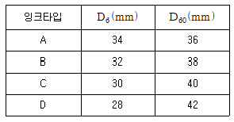
- A 잉크
- B 잉크
- C 잉크
- D 잉크
(정답률: 알수없음)
30. 열풍에 의하여 건조시키며 윤전오프셋, 그라비어, 용제성 플렉소 잉크의 건조방식에 해당되는 것은?
- 산화중합방법
- 증발건조방법
- 침투건조방법
- 자외선경화방법
(정답률: 알수없음)
31. PS판에 대한 설명 중 틀린 것은?
- 양반응이 거의 없어 유효기간이 길다.
- 온∙습도의 영향을 거의 받지 않는다.
- 중크롬산감광액을 사용하므로 재현성이 우수하다.
- 처리가 간단하고 수정이 용이하다.
(정답률: 알수없음)
32. 기능성 인쇄잉크의 연결이 바르지 않은 것은?
- 선명하고 자극적인 색상 잉크 - 형광잉크
- 자기에 감응하는 잉크 - 자성잉크
- 내식막을 형성하는 잉크 - 도전성잉크
- 온도를 감지하는 잉크 - 시온잉크
(정답률: 알수없음)
33. 평판인쇄에 사용하는 잉크 중 오프셋 윤전잉크에 해당되지 않는 것은?
- IR잉크
- 히트세트잉크
- 퀵세트잉크
- 오프셋 신문윤전잉크
(정답률: 알수없음)
34. 인쇄용지에서 섬유의 특성과 제지원료로서의 적합 여부를 좌우하는 품질은?
- 리그닌
- 셀룰로오스
- 헤미셀룰로오스
- 추출물
(정답률: 알수없음)
35. 내오존성, 내노화성, 전기절연성 등은 우수하지만 반발탄성과 기체투과성이 적고 디엔계 고무와의 혼합성이 나쁘며 접착성이 좋지 않은 단점이 있는 고무는?
- 니트릴 고무
- 부틸 고무
- 우레탄 고무
- 천연 고무
(정답률: 알수없음)
36. 제지 공정 중 표면처리를 하여 내수성을 조절할 수 있는 가장 적합한 장소는?
- 헤드박스
- 프레스
- 사이즈프레스
- 광택기
(정답률: 알수없음)
37. 고무 블랭킷이 반드시 갖춰야 할 성질이라고 볼 수 없는 것은?
- 잉크 수리성(受理性)과 전이성
- 화학적 내구성
- 내광성과 내한성(耐寒性)
- 탄성과 복원성
(정답률: 알수없음)
38. 산화중합형 잉크에 가장 적합한 식물성 기름의 종류는?
- 건성유
- 반건성유
- 불건성유
- 기름의 종류와 관계가 없음
(정답률: 알수없음)
39. 잉크의 주성분은 오일변성 알키드수지이며 산소와 반응하고 접착력, 광택, 피막특성이 우수하며, 후막인쇄가 가능한 잉크 건조 형식은?
- 증발건조형
- 전자경화형
- 산화중합형
- 침투형
(정답률: 알수없음)
40. 오프셋인쇄 축임물의 표면장력을 효과적으로 저하시키면서 유화현상의 발생이 적어 가장 경제적으로 사용할 수 있는 알코올은?
- 이소프로필알코올
- 메틸알코올
- 에틸알코올
- 프로필알코올
(정답률: 알수없음)
3과목: 특수인쇄학
41. 플렉소 인쇄의 잉크 공급장치 중 용제의 증발이 적고 판의 상태를 양호하게 지킬 수 있는 공급 장치는?
- 붙임 롤러 방식
- 독터 블레이드 방식
- 침적 방식
- 분사 방식
(정답률: 40%)
42. 175선의 스크린 선수의 비가 1:8의 망점(한변의 길이 129㎛, 스크린 선폭 16㎛)인 A와 한변의 길이가 10% 작은 망점(한변의 길이 115㎛, 스크린 선폭 29㎛) B가 동일한 부식 깊이일 때 A와 B의 용적비는?
- 0.50
- 0.75
- 0.81
- 0.87
(정답률: 알수없음)
43. 스크린 인쇄 잉크 건조 형식 중 화학적 건조방법에 해당되지 않는 것은?
- 산화중합형
- 가열경화형
- 증발건조형
- 2액반응형
(정답률: 알수없음)
44. 잉크가 접착되기 어려운 유리 드으이 재질에 인쇄시 사용되는 첨가제는?
- 커플링제
- 슬리핑제
- 레벨링제
- 소포제
(정답률: 알수없음)
45. 300 mesh/inch/T 형의 스크린 망사의 오프닝 구하며 약 얼마인가?
- 15㎛
- 30㎛
- 45㎛
- 60㎛
(정답률: 알수없음)
46. 세라믹 잉크의 제조시 CrO 을 주성분으로 하여 수산화알루미늄, 산화아연을 배합하여 높은 온도에서 열처리하여 제조하는 안료는?
- 황색안료
- 갈색안료
- 청색안료
- 흑색안료
(정답률: 알수없음)
47. 전사 인쇄에서 전사방법이 아닌 것은?
- 용해 전사
- 흡수 전사
- 가압 전사
- 열 전사
(정답률: 알수없음)
48. 플렉소 인쇄기의 표준형으로 각 유닛트에 독립된 압통이 수직으로 배열되어 건조장치 및 설치면적이 적게 드는 인쇄기의 형식은?
- 드럼형
- 스택형
- 인라인형
- 인와인드형
(정답률: 90%)
49. 유리인쇄의 특징에 대한 설명으로 틀린 것은?
- 유리 컬러잉크와 스퀴지오일의 혼합비는 5:1 이다.
- 화학적, 물리적 내구성이 필요하다.
- 스퀴지의 경도는 90° 이상의 경질을 사용한다.
- 미스프린트 잉크 제거제는 불화수소산(55%)과 물(3~6%)의 혼합액을 사용한다.
(정답률: 알수없음)
50. 합성 섬유(흰색 섬유 원단일 경우)에 다색(8도)인쇄 시 가장 좋은 인쇄 방법은?
- 직접 스크린 인쇄 방법
- 승화전사 인쇄 방법
- 그라비어 인쇄 방버
- 패드 인쇄 방법
(정답률: 알수없음)
51. 그라비어 인쇄기에서 텐션 롤러의 주된 역할은?
- 두루마리 용지의 좌우 불균형 조절
- 두루마리 용지의 절단
- 두루마리 용지의 주행 장력 조절 및 겹침 방지
- 두루마리 용지의 찢김 방지
(정답률: 알수없음)
52. 망사의 견장상태를 확인 검사하는 사항에 대한 설명으로 틀린 것은?
- 사매기가 완료된 스크린판은 일정시간 방치하여 장력의 안정을 기하도록 한다.
- 스크린판은 평평한 곳에 놓는다.
- 장력 측정기로 스크린 판의 중앙과 일정한 위치 4곳을 측정한다.
- 사매기 완료 후 물을 뿌려 과도한 장력을 낮추도록 한다.
(정답률: 알수없음)
53. 그라비어 인쇄의 독터는 3부분으로 되어 있다. 이에 해당되지 않는 것은?
- 강철날
- 지지판
- 조임쇠
- 보조판
(정답률: 알수없음)
54. 그라비어 인쇄에서 인쇄면에 요철이 생겨 분화구 모양으로 보이는 현상을 무엇이라 하는가?
- 가루화 현상
- 크레이터 현상
- 크롤링 현상
- 발포현상
(정답률: 알수없음)
55. 물질에 빛을 조사시킬 때 일어나는 광전효과를 외부 광전효과와 내부 광전효과로 나눌 때 내부 광전효과에 대하여 옳게 설명한 것은?
- 물질에 빛이 조사되어 전자와 정공이 쌍을 이루는 현상
- 물질에 빛이 조사되어 광 증폭이 발생되는 현상
- 불질에 빛 에너지가 들어가서 전자와 전자가 쌍을 이루어 광 증폭이 일어나는 현상
- 물질에 빛이 조사되어 광 분해가 일어나는 현상
(정답률: 알수없음)
56. 망점 스크린 인쇄 시 모아레가 발생하는 주된 원인은?
- 망사가 저 메시(mesh)이므로
- 망점필름과 스크린 망사의 각도 차이로
- 감광유제의 선정 잘못으로
- 필름이 망점이 너무 적을 때
(정답률: 알수없음)
57. 그라비어 잉크에 사용되는 첨가제 중 피막의 보강을 위한 것은?
- 체질안료
- 가소성 레진
- 불소계 왁스
- 불포화 지방산
(정답률: 알수없음)
58. 인쇄 회로기판의 장점이 아닌 것은?
- 자동부품 삽입과 납땜으로 생산 원가가 저렴해진다.
- 부품 조립시 정확성을 기할 수 있다.
- 도체가 같은 위치에 존재하고 있으므로 신뢰성이 향상된다.
- 부품이 단순화되고 수명이 연장된다.
(정답률: 알수없음)
59. 반도체 IC 인쇄의 특징으로 옳은 것은?
- 대전력, 고전압 회로에 적응력이 우수하다.
- 확산, 포토애칭, 증착 드의 공정에 의해 제작된다.
- 생산원가가 낮고, 대량생산이 가능하다.
- 일반적 기판재료로서 알루미늄을 사용한다.
(정답률: 알수없음)
60. 비즈니스폼 인쇄기의 급지부에서 종이가 인쇄부에 공급되기 전에 좌우로 흔들리는 것을 조정하는 역할을 하는 것은?
- dancer roll
- full auto paster
- edge guide
- perforating unit
(정답률: 84%)
4과목: 인쇄색채학
61. 분광반사율이 같지 않은 2가지 색이라도 어떤 광원 아래에서는 같은 색으로 보이는 현상을 무엇이라고 하는가?
- 표면색(表面色)
- 면색(面色)
- 공간색(空間色)
- 조건등색(條件等色)
(정답률: 알수없음)
62. 색입체에 대한 설명으로 옳은 것은?
- 색상은 원으로, 명도는 방사선으로, 채도는 상하직선으로 배열한다.
- 고명도가 되면 아래로 내려가고, 저명도는 위로 올라간다.
- 외부로(바깥쪽 둘레) 갈수록 고채도가 된다.
- 색입체는 수직으로 자르면 무채색축 좌, 우면에 유사색상이 보인다.
(정답률: 알수없음)
63. 물리적인 빛의 혼색 실험에 기초를 두며 현재 측색학의 대종을 이루고 있는 표색계는?
- 먼셀 표색계
- 오스트발트 표색계
- CIE 표준표색계
- 현색계
(정답률: 알수없음)
64. 색채측정에서 절대반사율의 측정방법이 아닌 것은?
- 반구를 이용하는 방법
- 구형 거울(mirror)을 이용하는 방법
- 적분구의 원리에 기초를 둔 방법
- 사각판 거울을 이용하는 방법
(정답률: 알수없음)
65. 다음은 NCS(Natural Color System)에 따라 표기된 것이다. 여기에서 20 이라는 수치가 나타내고 있는 의미는 무엇인가?
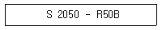
- 흰색도의 비율이 20% 이다.
- 색상에서 노랑이 20% 이다.
- 유채색도의 비율이 20% 이다.
- 검정색도의 비율이 20% 이다.
(정답률: 알수없음)
66. 다음 여러 가지 색 재현 중 감산혼합에 해당하지 않는 것은?
- 컬러 TV
- 컬러 사진
- 색유리를 겹쳤을 때
- 컬러 영화
(정답률: 알수없음)
67. 채도대비에서 적색의 채도를 낮추기 위한 방법으로 틀린 것은?
- 적색에 초록을 섞는다.
- 적색에 검정을 혼합한다.
- 적색에 청자색을 섞는다.
- 적색에 회색을 혼합해 간다.
(정답률: 알수없음)
68. 분광특성을 상대치로 나타낸 것은?
- 분광반사율
- 분광투과율
- 분광곡선
- 분광분포
(정답률: 알수없음)
69. GATF 표색계에서 색상오차(Hue Error)를 나타낸 식은? (단, H, M, L 은 3가지의 필터에 의해 판정된 농도치 중에서 최대치, 중간치, 최소치를 각각 의미한다.)
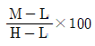
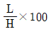
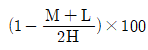
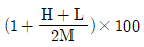
(정답률: 알수없음)
70. 빛이 물체에 투시된 것을 산광(散光)이라 하며, 이 산광이 완전히 반사될 때 백색이 생긴다. 다음 중 반사율이 가장 높은 것은?
- 탄산칼슘
- 석고
- 백지
- 황산바륨
(정답률: 알수없음)
71. 같은 빨강색의 물체를 본 두 사람의 느낌이 서로 달랐다. 이것이 의미하는 내용으로 옳지 않은 것은?
- 색에 대한 강수성에 대하여 서로 다르기 때문이다.
- 색의 인식은 보는 사람의 주관이 좌우된다.
- 색의 인식은 보는 사람의 외적 환경에 좌우된다.
- 물체 자체가 띈 빨강색이 여러 가지이기 때문이다.
(정답률: 알수없음)
72. CIE L*a*b* 색공간에 대한 설명으로 옳지 않은 것은?
- 기준 백색에 대한 삼자극치 값을 이용한다.
- a* 값이 + 쪽이면 Red 방향을 나타낸다.
- a* 값이 - 쪽이면 Yellow 방향을 나타낸다.
- b* 값이 - 쪽이면 Blue 방향을 나타낸다.
(정답률: 알수없음)
73. CCM(Computer Color Matching)의 배색 유형을 크게 2가지로 나눌 때 해당되는 것은?
- Isomeric Match
- Standard Match
- Illumination Match
- Spectrum Match
(정답률: 알수없음)
74. Munsell 표색계의 조화의 법칙에서 보색관계 2색 R 5/5, BG 5/5 를 식에 따라 면적비를 구하면 얼마인가?
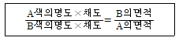
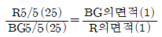
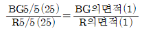
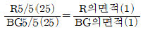
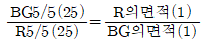
(정답률: 알수없음)
75. 그레이 스케일에서 백색의 반사율은 얼마나 되는가?
- 3%
- 30%
- 85%
- 95%
(정답률: 알수없음)
76. 가시광선(可視光線) 중 적색(R)의 파장은?
- 400~500nm
- 500~600nm
- 600~700nm
- 400~700nm
(정답률: 알수없음)
77. 표준광원에 대한 표기 중 백열등의 표기는 어느 것인가?
- A
- B
- C
- F
(정답률: 알수없음)
78. 색 자체가 지니고 있는 심리적, 물리적, 생리적 성질을 이용하여 인간의 생활이나 환경을 쾌적하게 하고 색의 기능이 발휘되도록 조절하는 색채 계획은?
- 색채 디자인
- 색채조시
- 색채 조절
- 색상 대비
(정답률: 알수없음)
79. 색채는 여러 가지 연상을 일으키며 상징적인 내용을 가지고 있다. 치료효과로 강장제, 무기력, 제조, 공장의 위험표시, 공장물의 초점색을 나타내는 색은?
- 적(赤) R
- Magenta(자주) B+R
- Orange(주황) R+1/2G
- 황 (黃) R+G
(정답률: 알수없음)
80. 민간의 식별력은 색채의 속성별로 다르게 나타난다. 다음 설명 중 먼셀체계에서 그 차이를 정확히 설명하지 않은 것은?
- 일반적으로 노란색계열의 원색은 높은 명도에서 나타난다.
- 같은 채도단계에서 색상이 다를 경우 인간의 시감은 다른 채도로 느낀다.
- 원래의 3자극치에 해당하는 빨강, 녹색, 파랑의 색상의 색이 더 높은 채도로 인식된다.
- 각 색상별로 최고 채도색을 측정기의 반사값에 의하여 규칙적으로 통일하게 배열하였다.
(정답률: 알수없음)
5과목: 인쇄작업론 및 품질관리
81. 그라비어 인쇄 제판 중 판통의 부식 후 경질의 크롬을 도금하는 이유로 가장 거리가 먼 것은?
- 인쇄 균일성, 작업성을 높이기 위해
- 비화선부의 더러움 방지를 위해
- 판의 내쇄력을 높이기 위해
- 망점 깊이와 면적을 변화시키기 위해
(정답률: 알수없음)
82. 색 검사대와 그 주위의 벽색으로 가장 적합한 것은?
- 연한 녹색
- 연한 적색
- 중성 회색
- 중성 황색
(정답률: 알수없음)
83. 적은 부수의 인쇄 및 교정인쇄와 원판제판 등에 주로 사용되는 스크레이퍼 인쇄기(scraper press)라고도 하는 것은?
- 정지 원통 인쇄기
- 석판 수동 인쇄기
- 1회전 인쇄기
- 삽지식 오프셋 인쇄기
(정답률: 70%)
84. 오프셋윤전기에서 삼각판 접지 정밀도 불량의 원인이 아닌 것은?
- 두루마리 장력 불량
- 니핑 롤러 조정 불량
- 두루마리 불랼으로 한쪽이 느슨함
- 판통 기어의 헐거움
(정답률: 알수없음)
85. 오프셋 인쇄기에서 두루마리 종이의 장력을 조정해 주는 장치는?
- 댄서 롤러
- 니핑롤러
- 클램프
- 드라이어 장치
(정답률: 알수없음)
86. 고속 인쇄에 가장 적합한 인쇄기의 가압 방식은?
- 평압식(platen type)
- 원압식(flat-bed cylinder type)
- 스크린식(screen type)
- 윤전식(rotary type)
(정답률: 알수없음)
87. 인쇄방식에서 인쇄가압 3형식을 설명한 것으로 볼 수 없는 것은?
- 평압 인쇄기(Platen press)는 평평한 판면에 평평한 압판으로 가하는 인쇄방식이다.
- 원압 인쇄기(Cylinder press)는 원통형의 압통으로 압력을 가하여 인쇄하는 방식이다.
- 윤전 인쇄기(Rotary press)는 2개의 원통, 즉 압통과 판통이 서로 접촉되어 회전하면서 그사이에 종이 통과시 인쇄하는 방식이다.
- 그라비어 인쇄기(Gravure press)는 오목정으로 된 판면에 묽은 잉크를 묻힌 다음, 오목점 밖의 잉크를 독터 블레이드로 긁어낸 후 피인쇄체에 직접 인쇄하는 방식이다.
(정답률: 알수없음)
88. 스크린 인쇄 제판법에서 간접 감광 제판법의 장점은?
- 내구력이 강하다.
- 작업 시간이 짧다.
- 비용이 적다.
- 신축이 일어나지 않는다.
(정답률: 알수없음)
89. 평판인쇄의 특징이 아닌 것은?
- 종이의 질에 제한을 받지 않는다.
- 제판시 화상이 바르게 제판되므로 수정이 용이하다.
- 화학적 인쇄방식으로 잉크 층이 두껍다.
- 인쇄 속도가 빠르다.
(정답률: 59%)
90. 낱장 오프셋 인쇄기에서 인쇄부의 구성 장치가 아닌 것은?
- 가늠 장치
- 축임 장치
- 잉크 장치
- 핑거 장치
(정답률: 알수없음)
91. A5판 320쪽의 책을 6000부 인쇄하려면 국전지 종이가 몇 연이 필요한가?
- 117연
- 118연
- 119연
- 120연
(정답률: 알수없음)
92. 일렉트로 잉크를 사용하는 디지털 인쇄기로 4색 인쇄할 때의 설명으로 옳은 것은?
- 잠상통에 4색의 잠상을 형성, 4색 토너를 묻혀 단번에 종이에 인쇄한다.
- 잠상통에 각 색마다 화상을 형성, 고무통을 거쳐 1색씩 종이에 4색 인쇄한다.
- 잠상통에 각 색의 화상을 형성, 고무통에 4색을 모아 단번에 종이에 인쇄한다.
- 잠상통에 4색 화상을 1색씩 형성, 직접 종이에 4색 인쇄한다.
(정답률: 알수없음)
93. 오프셋 인쇄기에서 다른 인쇄기와 달리 잉크를 전이시켜 주는 가장 중요한 것은?
- 판통
- 고무통
- 압통
- 잉크장치
(정답률: 알수없음)
94. 오프셋 윤전인쇄기 접지장치에서 기본적인 3가지 접지기구에 속하지 않는 것은?
- 포오머(former) 접지
- 나이프(knife) 접지
- 리본(ribon) 접지
- 버클(buckle) 접지
(정답률: 알수없음)
95. 완성된 그라비어 실린더의 표면에 비화선부의 더러움을 방지하고 판의 내쇄력을 높이기 위하여 주로 어떤 처리를 하는가?
- 전해연마
- 고주파처리
- 크롬도금
- 화염경화
(정답률: 90%)
96. 고무통의 패킹이 알맞게 되었을 경우에 고무통의 베어러 초과분 0.10mm, 인쇄용지 두께 0.25mm 이며, 필요 인쇄압이 0.08mm 이라면 이 때 필요한 고무통 인쇄압의 조절양은 얼마인가?
- 0.07mm
- 0.27mm
- 0.35mm
- 0.37mm
(정답률: 알수없음)
97. 인쇄실 온, 습도 관리에서 같은 습도를 유지하는 실내에 온도가 내려가면 실내의 상대 습도는?
- 상대 습도는 점점 내려간다.
- 상대 습도는 점점 올라간다.
- 상대 습도는 변하지 않는다.
- 상대 습도는 올라간 후 내려간다.
(정답률: 알수없음)
98. 알코올 축임물 방식의 장점에 대한 설명으로 틀린 것은?
- 판과 블랭킷 표면에서의 축임물의 증발이 적다.
- 잉크가 고르게 잘 오르므로 잉크량이 적어도 되며, 광택이 있는 인쇄물을 얻을 수 있다.
- 블랭킷의 더러움(greasing)이 감소된다.
- 축임물의 표면장력이 감소되어 적은 양으로 균일한 수막을 얻을 수 있다.
(정답률: 알수없음)
99. 평판인쇄 기술이 개발된 초기의 평판 인쇄기의 가압 방식은?
- 평압식(platen type)
- 원압식(flat-bed cylinder type)
- 복합식(combination type)
- 윤전식(rotary type)
(정답률: 알수없음)
100. 인쇄방식 중 드라이 래크(dry rack)의 건조 장치가 사용 되는 것은?
- 오프셋 인쇄
- 플렉소그래피 인쇄
- 그라비어 인쇄
- 스크린 인쇄
(정답률: 알수없음)